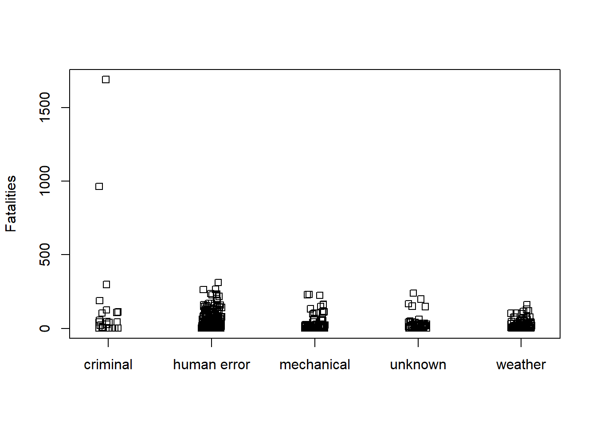
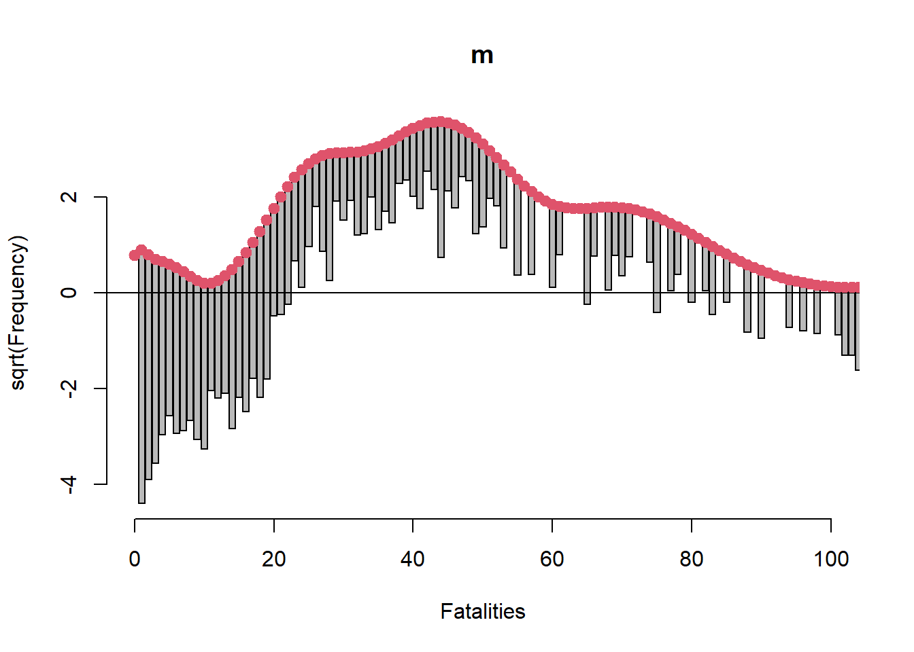
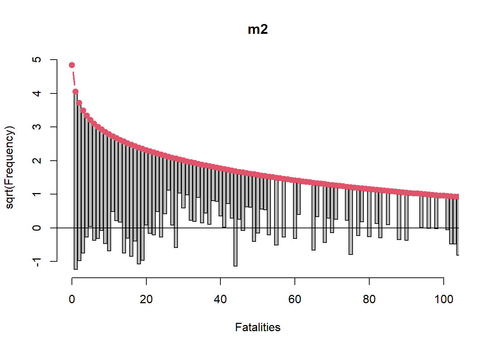
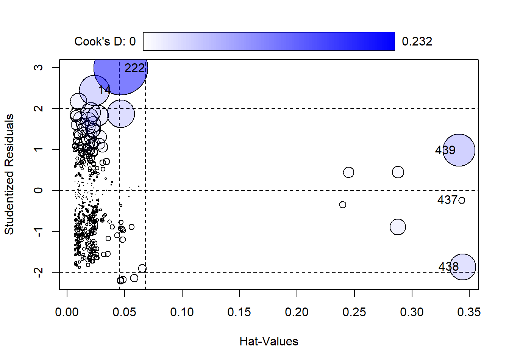
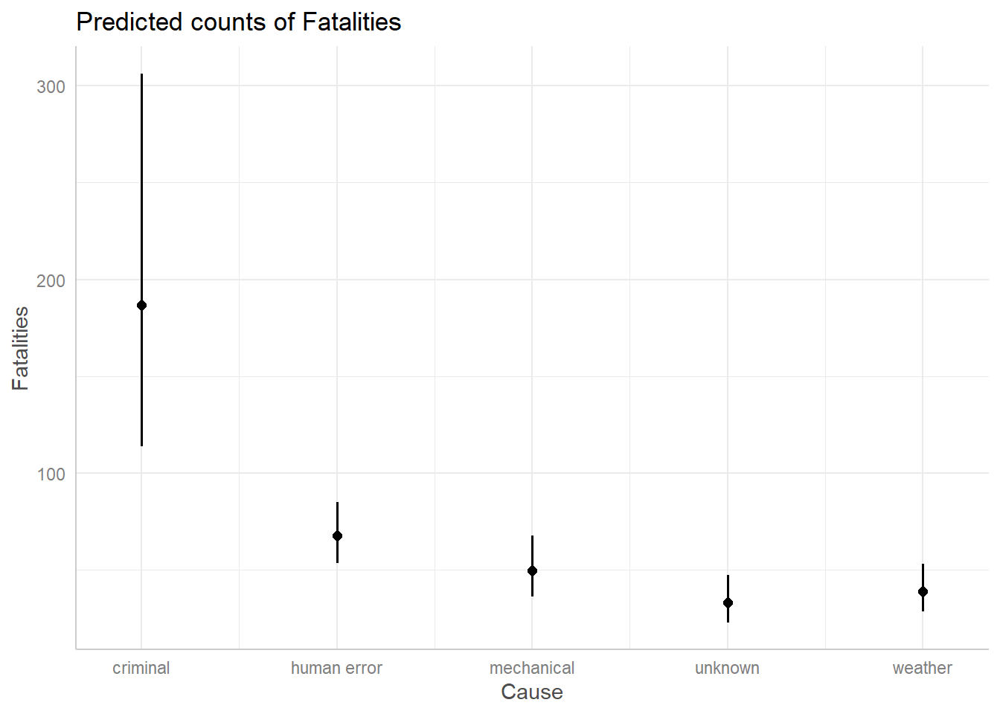
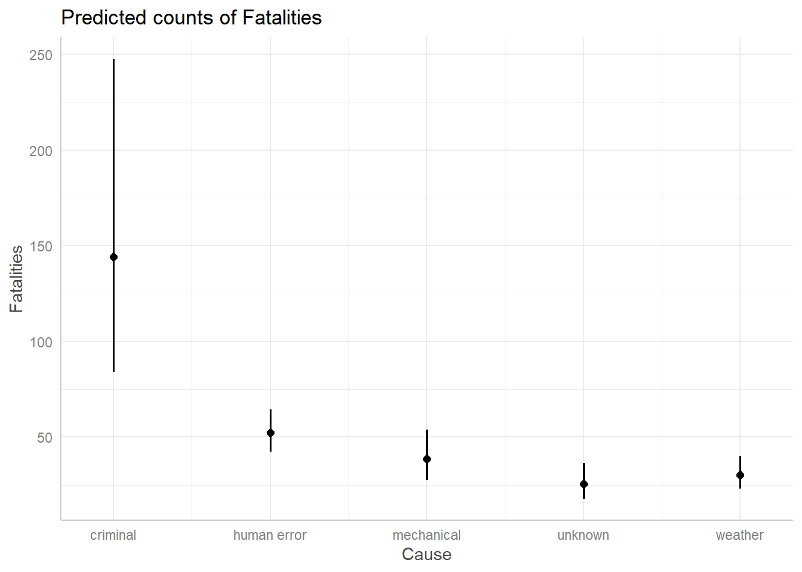
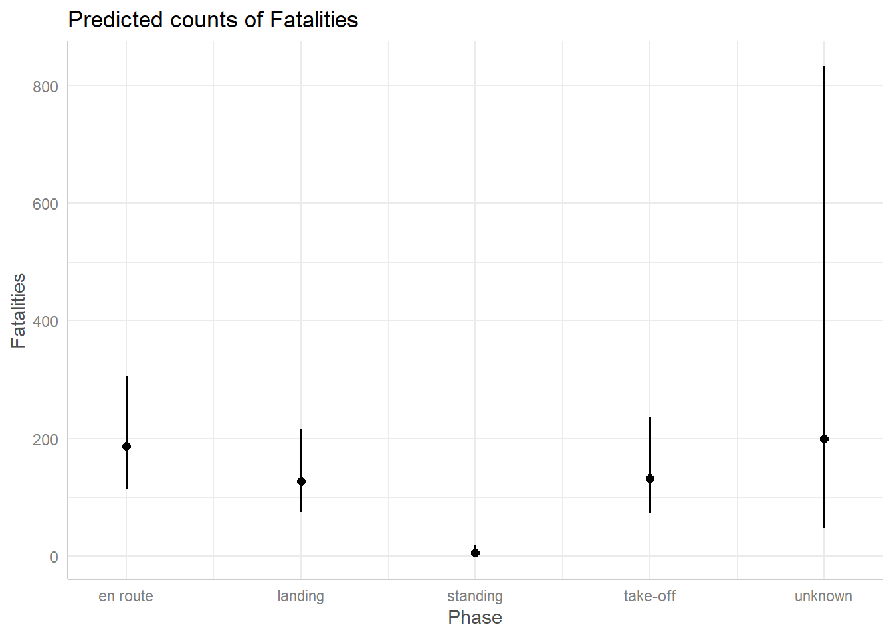
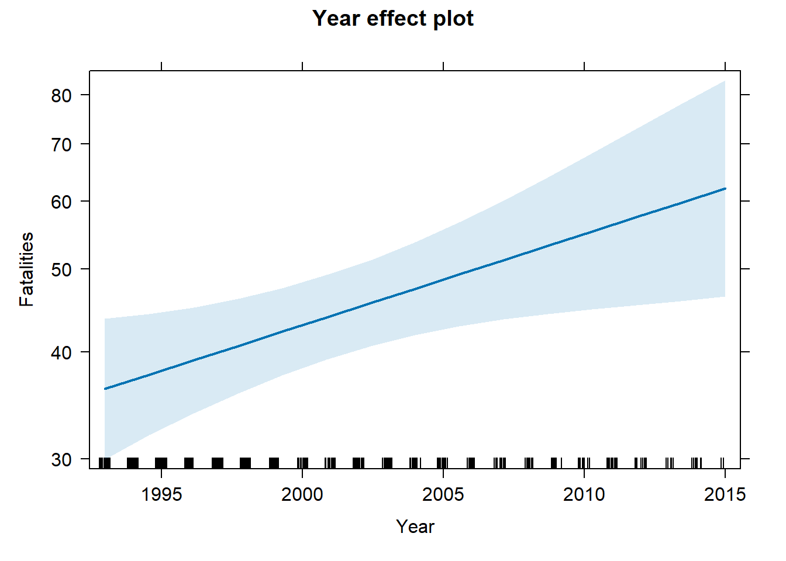
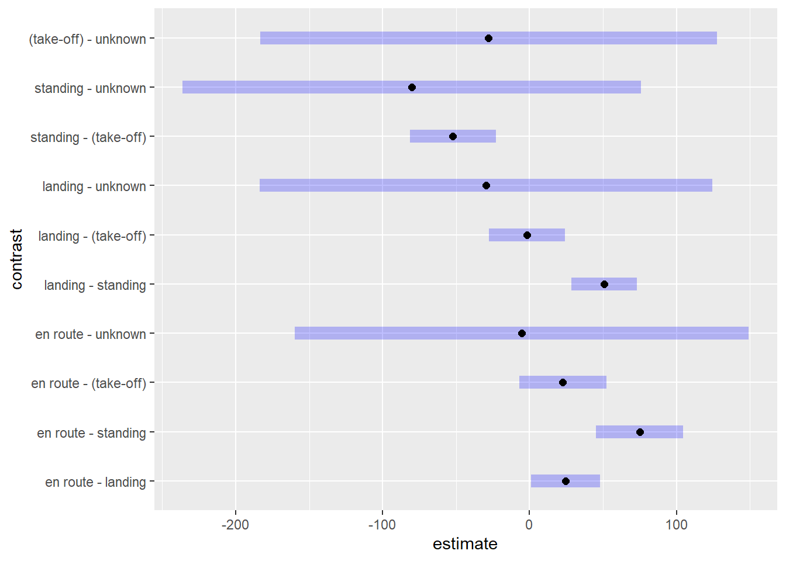

The AirCrash dataset in the vcdExtra package contains data on all fatal commercial airplane crashes from 1993–2015. (Friendly 2022) The data excludes small planes (less than 6 passengers) and non-commercial aircraft such as cargo, military, and private planes. How does the number of fatalities depend on other variables? Fit a main effects Poisson regression model. (Friendly and Meyer 2016)
library(vcdExtra)
data("AirCrash")The AirCrash data frame has data on 439 crashes with the following 5 variables:
str(AirCrash)## 'data.frame': 439 obs. of 5 variables:
## $ Phase : Factor w/ 5 levels "en route","landing",..: 2 2 2 2 2 2 2 2 2 2 ...
## $ Cause : Factor w/ 5 levels "criminal","human error",..: 1 1 1 1 4 4 4 4 4 4 ...
## $ date : Date, format: "1993-09-21" "1993-09-22" ...
## $ Fatalities: int 27 108 125 112 41 19 8 22 14 43 ...
## $ Year : int 1993 1993 1996 2002 1993 1993 1994 2000 2002 2004 ...An interesting aspect of this data is that it is technically not a sample. We have all the data. We could argue that no inferential statistics or modeling is necessary. We should simply summarize and describe the data. On the other hand, we could argue that the data we have is just one of many possible outcomes from a population of possibilities. We can’t rewind time and take another sample, but we can imagine that there were many possible outcomes from 1993 to 2015. What we observed – and all that we can observe – was one possible outcome. Therefore, we might use the data to estimate what the future holds. We take the latter approach.
The Fatalities variable is our dependent variable. It records the number of fatalities per crash. This is a count variable; it only takes integer values greater than or equal to 0. We can see the distribution of Fatalities is severely skewed by some large crashes. Notice the mean is over twice as large as the median. We also notice there are no commercial airplane crashes with 0 fatalities.
summary(AirCrash$Fatalities)## Min. 1st Qu. Median Mean 3rd Qu. Max.
## 1.00 7.00 19.00 50.68 60.00 1692.00A Histogram reveals the extent of the skewness. We set
breaks = 50 to increase the number of bins in the
histogram.
hist(AirCrash$Fatalities, breaks = 50)The Phase variable tells us in which one of the five phases of flight the plane crashed:
Since it’s a factor we can get counts by calling
summary() on the variable.
summary(AirCrash$Phase)## en route landing standing take-off unknown
## 157 210 4 65 3The Cause variable tells us the cause of the crash (if known):
It, too, is a factor.
summary(AirCrash$Cause)## criminal human error mechanical unknown weather
## 23 207 74 52 83The Year column tells us in what year the crash occurred. We can use
tapply() to quickly sum Fatalities by Year and pipe into
the barplot() function. A barplot reveals Fatalities
slightly decreasing over time for the most part, except in
2001. The argument las = 2 sets axis labels
perpendicular to the axis.
tapply(AirCrash$Fatalities, AirCrash$Year, sum) |>
barplot(las = 2)How does Fatalities vary with Phase and Cause? Simple stripcharts are effective for quickly exploring this question. It appears two unusually high cases of fatalities happened en route due to criminal activity.
stripchart(Fatalities ~ Phase, data = AirCrash, method = "jitter",
vertical = TRUE)stripchart(Fatalities ~ Cause, data = AirCrash, method = "jitter",
vertical = TRUE)
A common distribution used to model count data is the Poisson distribution. The Poisson distribution has one parameter, the mean. The variance of the distribution is also the mean. As the mean gets bigger, so does the variance.
We can model count data using the glm() function with
family=poisson. Let’s model Fatalities as function of Phase
and Cause.
m <- glm(Fatalities ~ Phase + Cause, data = AirCrash, family = poisson)To determine if Phase and/or Cause helps explain the variability in
Fatalities we can assess the analysis of deviance table using the
Anova() function in the car package (Fox and Weisberg 2019). It appears both explain
a substantial amount of variability.
library(car)
Anova(m)## Analysis of Deviance Table (Type II tests)
##
## Response: Fatalities
## LR Chisq Df Pr(>Chisq)
## Phase 1643.1 4 < 2.2e-16 ***
## Cause 4718.1 4 < 2.2e-16 ***
## ---
## Signif. codes: 0 '***' 0.001 '**' 0.01 '*' 0.05 '.' 0.1 ' ' 1The drop1() function in the stats package performs the
same tests and includes information on the change in AIC if we drop the
variable. For example, if we drop Cause from the model, the AIC
increases from 35036 to 38111. Recall that lower AIC is desirable.
drop1(m, test = "Chisq")## Single term deletions
##
## Model:
## Fatalities ~ Phase + Cause
## Df Deviance AIC LRT Pr(>Chi)
## <none> 31269 33401
## Phase 4 32912 35036 1643.1 < 2.2e-16 ***
## Cause 4 35987 38111 4718.1 < 2.2e-16 ***
## ---
## Signif. codes: 0 '***' 0.001 '**' 0.01 '*' 0.05 '.' 0.1 ' ' 1While both variables seem highly “significant” we should assess the model’s goodness of fit. One effective way to do this for count models is creating a rootogram with the countreg package (Kleiber and Zeileis 2016). The tops of the bars are the expected frequencies of the counts given the model. The counts are plotted on the square-root scale to help visualize smaller frequencies. The red line shows the fitted frequencies as a smooth curve. The x-axis is a horizontal reference line. Bars that hang below the line show underfitting, bars that hang above show overfitting. We see our model is extremely ill-fitting for Fatalities ranging from 1 - 100.
# Need to install from R-Forge instead of CRAN
# install.packages("countreg", repos="http://R-Forge.R-project.org")
library(countreg)
rootogram(m, max = 100)
One reason for such an ill-fitting model may be the choice of family
distribution we used with glm(). The Poisson distribution
assumes equivalent mean and variance. A more flexible model would allow
the mean and variance to differ. One such model that allows this is the
negative binomial model. We can fit a negative binomial model using the
glm.nb() function in the MASS package. (Venables and Ripley 2002)
library(MASS)
m2 <- glm.nb(Fatalities ~ Phase + Cause, data = AirCrash)
rootogram(m2, max = 100)
This rootogram looks much better though it’s far from good. However it’s probably not reasonable to expect to sufficiently model something like air crash fatalities using only two categorical variables.
We may wish to entertain an interaction between Phase and Cause. For example, the effect of landing on Fatalities may depend on whether cause is human error or weather. But before we fit an interaction we should look at a cross-tabulation of Phase and Cause to see if we have any sparse cells. Indeed we do. We have five cells of 0 counts and seven cells of counts 3 and under.
xtabs(~ Phase + Cause, data = AirCrash)## Cause
## Phase criminal human error mechanical unknown weather
## en route 16 63 29 25 24
## landing 4 114 19 18 55
## standing 2 0 2 0 0
## take-off 1 29 24 8 3
## unknown 0 1 0 1 1Therefore we forego the interaction. We do not want to model interactions that we did not observe.
Let’s add Year to the model. It appears to make a marginal contribution to explaining Fatalities.
m3 <- glm.nb(Fatalities ~ Phase + Cause + Year, data = AirCrash)
Anova(m3)## Analysis of Deviance Table (Type II tests)
##
## Response: Fatalities
## LR Chisq Df Pr(>Chisq)
## Phase 23.328 4 0.0001089 ***
## Cause 51.136 4 2.091e-10 ***
## Year 6.137 1 0.0132396 *
## ---
## Signif. codes: 0 '***' 0.001 '**' 0.01 '*' 0.05 '.' 0.1 ' ' 1The interested reader may wish to verify that adding Year to the model doesn’t appreciably change the rootogram.
Diagnostic plots can help us assess if the model does a good job of
representing the data. A useful diagnostic plot function,
influencePlot(), is available in the car package. We simply
give it our model object and it returns a scatter plot of Studentized
Residuals versus Hat-Values (leverage), with point size mapped to Cook’s
D (influence). By default the five most “noteworthy” points are labeled.
The numbers refer to the row number in the data frame.
influencePlot(m3)
## StudRes Hat CookD
## 14 2.4499231 0.02360668 0.072971602
## 222 2.9897351 0.04688623 0.232270205
## 437 -0.2380636 0.34328385 0.003153681
## 438 -1.8694688 0.34423047 0.055350359
## 439 0.9817622 0.34111672 0.083016892Row 222 has the highest Cook’s D value and Residual. This one of the planes that were crashed en route on September 11, 2001.
AirCrash[222,]## Phase Cause date Fatalities Year
## 222 en route criminal 2001-09-11 1692 2001When cases appear to have high leverage or influence, we may want to re-fit the model without them (one at a time) to see if the results change. In this case we choose to use all available data.
Our final model summary is as follows:
summary(m3)##
## Call:
## glm.nb(formula = Fatalities ~ Phase + Cause + Year, data = AirCrash,
## init.theta = 0.7339275638, link = log)
##
## Deviance Residuals:
## Min 1Q Median 3Q Max
## -2.4043 -1.1417 -0.5786 0.2520 2.8804
##
## Coefficients:
## Estimate Std. Error z value Pr(>|z|)
## (Intercept) -43.834781 19.577798 -2.239 0.025156 *
## Phaselanding -0.380320 0.128905 -2.950 0.003174 **
## Phasestanding -3.584073 0.679347 -5.276 1.32e-07 ***
## Phasetake-off -0.348486 0.177710 -1.961 0.049880 *
## Phaseunknown 0.066040 0.688236 0.096 0.923556
## Causehuman error -1.015330 0.269419 -3.769 0.000164 ***
## Causemechanical -1.322336 0.288925 -4.577 4.72e-06 ***
## Causeunknown -1.731870 0.308109 -5.621 1.90e-08 ***
## Causeweather -1.561468 0.288959 -5.404 6.53e-08 ***
## Year 0.024532 0.009792 2.505 0.012238 *
## ---
## Signif. codes: 0 '***' 0.001 '**' 0.01 '*' 0.05 '.' 0.1 ' ' 1
##
## (Dispersion parameter for Negative Binomial(0.7339) family taken to be 1)
##
## Null deviance: 600.09 on 438 degrees of freedom
## Residual deviance: 511.98 on 429 degrees of freedom
## AIC: 4207.8
##
## Number of Fisher Scoring iterations: 1
##
##
## Theta: 0.7339
## Std. Err.: 0.0443
##
## 2 x log-likelihood: -4185.7620Since Phase and Cause have five levels each, both have four coefficients. The reference levels are “en route” and “criminal”, respectively. The coefficients for the other levels are relative to the reference levels. For example, the coefficient for “standing” Phase is about -3.58. This says the expected log count of Fatalities when Phase is “standing” is about 3.58 less than when Phase is “en route”, all other variables held constant.
Log counts are hard to understand. If we exponentiate we get a multiplicative interpretation.
exp(coef(m3)["Phasestanding"])## Phasestanding
## 0.02776239This says the expected count of Fatalities when Phase is “standing” is about 1 - 0.03 = 97% less than the expected count when Phase is “en route”, all other variables held constant.
Exponentiating the Year coefficient returns the following:
exp(coef(m3)["Year"])## Year
## 1.024835This says air crash Fatalities increased by about 2% each year from 1993 - 2015.
Effect plots can help us visualize our count model. Using the
ggpredict() and associated plot() function
from the ggeffects package we plot expected counts given Cause and
Phase. (Lüdecke 2018). It looks like
expected fatalities are around 200 when the cause is criminal, but there
is a great deal of uncertainty. All other expected counts are about 50.
We should note these predictions are made holding Phase at “en route”
and Year at 2000.
library(ggeffects)
ggpredict(m3, terms = "Cause") |> plot()
We can see this by calling ggpredict() without
plot().
ggpredict(m3, terms = "Cause")## # Predicted counts of Fatalities
##
## Cause | Predicted | 95% CI
## ------------------------------------------
## criminal | 186.65 | [113.74, 306.29]
## human error | 67.62 | [ 53.73, 85.09]
## mechanical | 49.74 | [ 36.45, 67.89]
## unknown | 33.03 | [ 23.03, 47.36]
## weather | 39.16 | [ 28.77, 53.32]
##
## Adjusted for:
## * Phase = en route
## * Year = 2000.00If we wanted to change the Phase and Year values, we could do so as follows:
ggpredict(m3, terms = "Cause",
condition = c(Phase = "landing", Year = 2005)) |>
plot()
The expected counts are a little different, but the general theme remains: a criminal cause appears to have the potential for around 100 more fatalities than the other causes.
When we visualize the effect of Phase we get an usually big confidence interval for “unknown”.
ggpredict(m3, terms = "Phase") |> plot()
This is because we only have 3 observations of crashes in an unknown phase. We simply don’t have enough data to estimate a count for that phase with any confidence.
The Year predictor seems to suggest there was a slightly positive trend in fatalities from 1993 - 2015 that could continue into the future. But the confidence band is so wide and uncertain that it’s entirely possible the trend could stay steady or decline.
ggpredict(m3, terms = "Year") |>
plot()Recall that ggpredict() is adjusting for Cause
and Phase when creating the above plot. The above plot is created
holding Phase = “en route” and Cause = “criminal”.
Another way to create an effect plot is to hold Phase and Cause at their mean values. But how do you hold categorical variables at their mean levels? You simply take the proportions of each and plug into the model. The effects package does this for us. (Fox and Weisberg 2018)
First let’s see the plot it creates. Notice this plot seems a little more certain. We also get a “rug” at the bottom of the plot to remind us how much data we have. We see we have fewer observations after 2010.
library(effects)
Effect(focal.predictors = "Year", mod = m3) |>
plot()
If we save the call to Effect() as an object, we can
look at the “model.matrix” element to see what values Phase and Cause
were held at.
e <- Effect(focal.predictors = "Year", mod = m3)
e$model.matrix## (Intercept) Phaselanding Phasestanding Phasetake-off Phaseunknown
## 1 1 0.4783599 0.009111617 0.1480638 0.006833713
## 2 1 0.4783599 0.009111617 0.1480638 0.006833713
## 3 1 0.4783599 0.009111617 0.1480638 0.006833713
## 4 1 0.4783599 0.009111617 0.1480638 0.006833713
## 5 1 0.4783599 0.009111617 0.1480638 0.006833713
## Causehuman error Causemechanical Causeunknown Causeweather Year
## 1 0.4715262 0.1685649 0.118451 0.1890661 1993
## 2 0.4715262 0.1685649 0.118451 0.1890661 1998
## 3 0.4715262 0.1685649 0.118451 0.1890661 2004
## 4 0.4715262 0.1685649 0.118451 0.1890661 2010
## 5 0.4715262 0.1685649 0.118451 0.1890661 2015
## attr(,"assign")
## [1] 0 1 1 1 1 2 2 2 2 3
## attr(,"contrasts")
## attr(,"contrasts")$Phase
## [1] "contr.treatment"
##
## attr(,"contrasts")$Cause
## [1] "contr.treatment"These values are simply the proportions of observations at each level. For example, compare the above values for Phase to the observed proportions of Phase in the data.
table(AirCrash$Phase) |> proportions()##
## en route landing standing take-off unknown
## 0.357630979 0.478359909 0.009111617 0.148063781 0.006833713We see that “landing”, “standing”, “take-off”, and “unknown” are held at their proportions. (“en route” is the reference level and not directly modeled.) While these values are not plausible in real life, they allow us to incorporate all their effects at proportional levels for the purpose of visualizing the effect of Year. Changing these values does not change the shape of the Year effect other than to shift it up or down the y-axis.
The above plot was created with the lattice package (Sarkar 2008). We can create the same plot in
ggplot2 (Wickham 2016) using the
ggeffect() function from the ggeffects package. In fact the
ggeffect() function simply uses the Effect()
function from the effects package.
ggeffect(m3, terms = "Year") |>
plot()While the effect plots give us some indication of how expected
fatalities differ between Phase and Cause, they don’t directly quantify
how they differ. For this type of analysis we can use the emmeans
package. (Lenth 2022) Below we estimate
differences in expected fatalities between Phases using the
emmeans() function. The syntax
pairwise ~ Phase says to calculate all pairwise differences
between the levels of Phase. The argument
regrid = "response" says to calculate the differences on
the original response scale, which is a count. Finally the
$contrasts notation extracts just the contrasts. (Without
$contrasts the result also includes estimated means at each
level of Phase.) The largest significant difference is between “en
route” and “standing”, which estimates about 75 more fatalities for
plans “en route” versus plans standing on a runway. That seems to make
sense.
library(emmeans)
emmeans(m3, pairwise ~ Phase, regrid = "response")$contrasts## contrast estimate SE df z.ratio p.value
## en route - landing 24.39 8.63 Inf 2.826 0.0380
## en route - standing 74.97 10.88 Inf 6.892 <.0001
## en route - (take-off) 22.69 10.94 Inf 2.074 0.2314
## en route - unknown -5.26 56.65 Inf -0.093 1.0000
## landing - standing 50.57 8.17 Inf 6.191 <.0001
## landing - (take-off) -1.71 9.44 Inf -0.181 0.9998
## landing - unknown -29.66 56.44 Inf -0.525 0.9848
## standing - (take-off) -52.28 10.71 Inf -4.884 <.0001
## standing - unknown -80.23 57.20 Inf -1.403 0.6259
## (take-off) - unknown -27.95 56.95 Inf -0.491 0.9882
##
## Results are averaged over the levels of: Cause
## P value adjustment: tukey method for comparing a family of 5 estimatesWe can also pipe this result into plot() to see the
difference in expected values visualized along with 95% confidence
intervals.
emmeans(m3, pairwise ~ Phase, regrid = "response")$contrasts |>
plot()
To see the actual values of the 95% confidence intervals, we can pipe
the result into the confint() function. The difference
between “en route” and “standing” is plausibly anywhere between 45.3 and
104.6.
emmeans(m3, pairwise ~ Phase, regrid = "response")$contrasts |>
confint()## contrast estimate SE df asymp.LCL asymp.UCL
## en route - landing 24.39 8.63 Inf 0.846 47.9
## en route - standing 74.97 10.88 Inf 45.295 104.6
## en route - (take-off) 22.69 10.94 Inf -7.155 52.5
## en route - unknown -5.26 56.65 Inf -159.801 149.3
## landing - standing 50.57 8.17 Inf 28.293 72.9
## landing - (take-off) -1.71 9.44 Inf -27.464 24.1
## landing - unknown -29.66 56.44 Inf -183.623 124.3
## standing - (take-off) -52.28 10.71 Inf -81.480 -23.1
## standing - unknown -80.23 57.20 Inf -236.257 75.8
## (take-off) - unknown -27.95 56.95 Inf -183.300 127.4
##
## Results are averaged over the levels of: Cause
## Confidence level used: 0.95
## Conf-level adjustment: tukey method for comparing a family of 5 estimatesThe esdcomp data frame from the faraway
package (Faraway 2016) contains data on
complaints about emergency room doctors. Data was recorded on 44 doctors
working in an emergency service at a hospital to study the factors
affecting the number of complaints received. Build a model for the
rate of complaints received. (Faraway
2006) Use visits as an offset in the model.
library(faraway)
data("esdcomp")